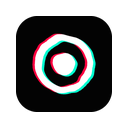

VJam FX popup 見本
popup 作り直しの見本(2026-10-02 に決定)。アイコンは A(マークだけ・名前は VJam FX のまま)、popup は Auto が主役で、細かい操作は「手動」に畳む。ここの日本語は説明用で、製品の文言は今の popup と同じ英語。
① アイコン
採用:A。128 は 96 の絵 + 周り 16px 透明。16 / 32 は線を太くした専用版(#46 で入れ済み)。

A 128
48
16
32
ツールバー(左:16 専用 / 右:A を縮小しただけ)
ロゴ(popup のヘッダー)
FX の下端を手書きの「AM」の下端にそろえた。色ずれの向きもロゴと同じ(左ピンク・右水色)。
② popup:Auto が主役(4 つの状態)
いつもは上の 3 段(ヘッダー・いま流れているもの・操作)だけで足りる。細かい操作は「手動」を開いたときだけ出る。
ON・Auto 中(いつもの画面)
AUTO124 BPM · 16 拍
Neon Rain1
Sonar Ping2
Aurora3
Blend RndFilter RndAll tabs
不透明度80%
OFF
右上のスイッチで ON。そのまま Auto で始まって、音に合わせて切り替わります。
手動を開いたところ
エフェクト
検索…
Neon Rain
Neon Smoke
Neon Tunnel
Neon Vines
Filter
InvertHueSatGrayCont
Blend
ScreenLightenDiffExcl
動かないページ(chrome:// など)

このページには重ねられません
ふつうの Web ページで開いてください